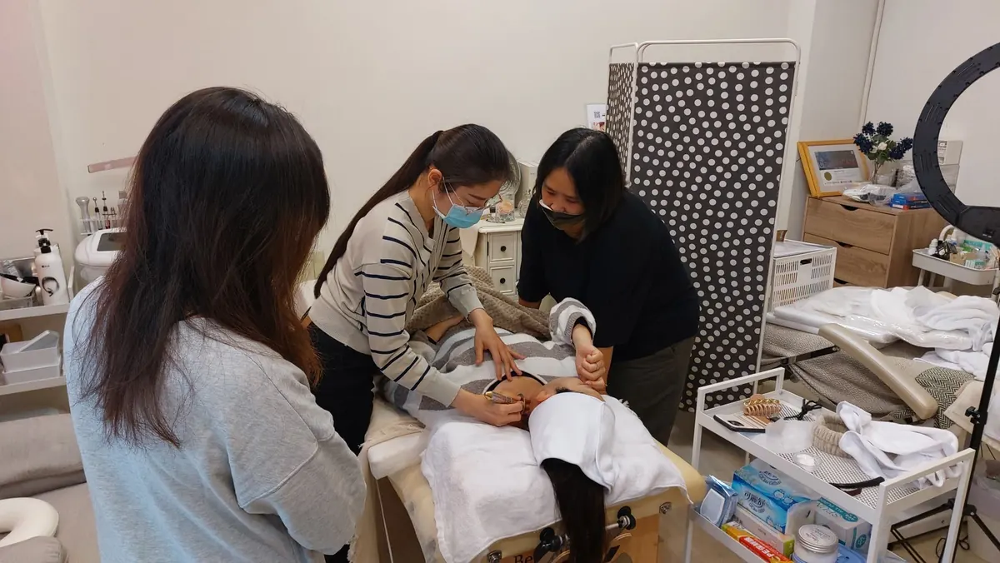
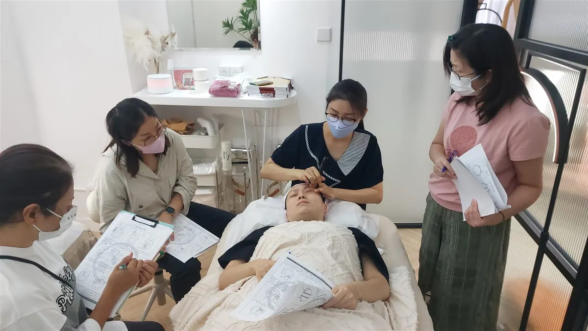

The Bojin Journal · Eyes & Brows
Under-Eye Bags? What Causes Them and What Actually Helps

Some mornings they’re barely there. Other mornings they’re the first thing you see. Some of what sits under your eyes is fluid that gathered overnight, and some of it is the way this area changes with age. They need different things, so it helps to know which is which.
Under-eye bags usually come from two things: the soft fat that cushions the eye shifting forward with age, and fluid that gathers overnight. The fat is structure; no cream or home tool moves it. The fluid part changes day to day, and gentle self-care around the eye, about twice a week, can help you look a little more rested for a while. Swelling that is sudden, one-sided or painful needs a doctor. This is self-care, not medical care.
Why bags show up now, when they never used to
None of this is your fault. Behind the lower lid there’s a soft cushion of fat that protects the eye. With the years, the thin layer that holds it back loosens, and some of that fat can ease forward. The skin over it is the thinnest on your face, and it loses firmness, so the shape shows through more than it used to.
Then there’s fluid. Lie flat for seven or eight hours and some of it settles around the eyes, which is why bags often look worst first thing in the morning and soften once you’ve been upright for a while. A salty dinner, a glass of wine, a late night or a good cry can all add to it.
Puffiness, bags or dark circles?
They often show up together, but they aren’t the same thing:
| What you see | What it usually is | What can help |
|---|---|---|
| Swelling that’s worse in the morning and changes day to day | Fluid (puffiness) | Cool compress, sleep habits, gentle self-care |
| A soft bulge that’s there all day, every day | Fat that has shifted forward | Structure; ask a dermatologist or eye specialist |
| A shadow or darker skin under the eye | Dark circles | See the dark circles guide |
| Sudden swelling, one eye, redness, pain or itching | Something to get checked | See a doctor |
Habits that make mornings puffier
- A salty or late dinner, or a drink in the evening. Many women notice their eyes the next morning.
- Sleeping completely flat or face-down. An extra pillow keeps your head a little higher.
- Rubbing your eyes. The skin here is thin; rubbing tugs at it and can make it puffier. Pat instead.
- Allergy season. If your eyes itch and swell together, that’s worth raising with your doctor.

A 10-second under-eye check
- Morning and evening. Look in the same mirror, in the same light, when you wake and again before bed. If the bags are much softer by evening, fluid is a big part of it.
- Look up, keeping your head still. If the bulge under your eyes looks fuller when you look up, shifted fat is likely part of the story, and that part won’t change with self-care.
One honest note: fingertips and most home tools mostly move the top layer of skin, a millimeter or two deep. Under the eye, that layer is even thinner. That’s exactly why pressing harder never helps here.
What can help, honestly
| Approach | What it works on | What to expect |
|---|---|---|
| A cool compress or chilled spoons in the morning | Morning puffiness | Puffiness may settle a little sooner |
| An extra pillow and an earlier, less salty dinner | How much fluid gathers overnight | Many women notice a difference; it costs nothing |
| Eye creams | The skin surface: moisture and comfort | Softer-feeling skin; it won’t move fat |
| Gentle self-care around the eye | Tension in the forehead and brows, and a more rested look | Gentle and temporary; about twice a week |
| A dermatologist or eye specialist | Fat that has shifted, loose skin | A professional assessment of what’s right for you |
Where to start tonight
Start above the eye, not under it. With a little cream on your fingertips, begin just above the inner end of one brow and make small, light circles along the brow bone out to the tail. Lift off and return to the start. Three slow passes, about a minute for that side, then the other. It eases the forehead and brows that weigh on the whole eye area, and it’s the same first step Yu-Ting shows in the free 1:18 demo.
Why not under the eye? That skin is the thinnest on your face, and it’s easy to press too hard or drag it. In the course, Yu-Ting teaches the under-eye area later, in order, once your pressure is right.
“Twice a week is enough. This is skin we’re working on. Too much pressure or too many sessions can backfire.”Yu-Ting Lan, to her students
Honest expectations, and a safety note
Self-care can’t move fat or tighten loose skin, and it won’t erase a true bag. What many women notice is a more rested look and a calmer eye area, especially on puffy mornings, gently and for a while. For bags that are there every day, a dermatologist or eye specialist can tell you what your options are.
Quick answers
What causes bags under the eyes?
Usually a mix: the soft fat that cushions the eye can shift forward as the tissue holding it back loosens with age, the skin under the eye thins, and fluid can gather there overnight. The first two are structure; the fluid part changes day to day.
Can bojin get rid of under-eye bags?
No. It can't move fat or tighten loose skin. Gentle self-care around the eye can help you look a little more rested for a while, and it's kindest to morning puffiness that changes day to day. For bags that are there all the time, ask a dermatologist or eye specialist.
Why are my eye bags worse in the morning?
Lying flat for hours lets fluid settle around the eyes, and a salty dinner, a glass of wine or a good cry the night before can add to it. It usually eases once you've been upright for a while.
Is it safe to work under my eyes at home?
Only very gently, and never on the eyeball. The skin under the eye is the thinnest on your face. That's why this guide starts above the brow, and why Yu-Ting teaches the under-eye area later, in the course, once your pressure is right.
When should I see a doctor about swelling around my eyes?
If swelling appears suddenly, affects one eye, comes with redness, pain, itching or a change in vision, or doesn't settle within a few days, see a doctor.
See the first eye-area step up close
In the free 1:18 demo, Yu-Ting works the first step of the eye routine, just above the brow, at real speed. The rest of the eye area, including under the eyes, comes later, in the course. Watch her pressure and pace first.
Watch the free 1:18 demoPart of the Eyes & Brows guide: a 10-second check, the starting route, and related guides for this area.
Yu-Ting Lan is a Taiwan-based international bojin instructor and the founder of Héhé Studio. She has taught her bojin method to more than a thousand students, from complete beginners to grandmothers, across Taiwan, Hong Kong and Malaysia.